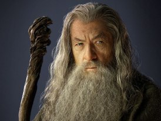

Гэ́ндальф (др.-сканд. Gandalf; согласно Приложению E к «Властелину колец» правильное произношение имени — Га́ндалв, [ˈgɑːndɑːlv]) — один из центральных персонажей легендариума Джона Р. Р. Толкина, в частности, повести «Хоббит, или Туда и обратно» и романа «Властелин колец». Упоминается также в посмертно изданном произведении «Сильмариллион», в «Походе к Эребору» и некоторых других работах Толкина.
Гэндальф — архетипический мудрый волшебник, традиционная фигура в знакомой Дж. Р. Р. Толкину скандинавской и британской мифологии. Имя «Гэндальф», или, вернее, «Гандальв», позаимствовано из древненорвежской поэмы Dvergatal, где оно принадлежит одному из «нижних свартальвов» (гномов)[1]. В ранних набросках Толкина к «Хоббиту» Гэндальфом звали предводителя отряда гномов, и описывался он как невысокий «старик с посохом»[1]. В окончательной версии повести король наугрим получил имя Торин Дубощит[2], а Гэндальфом автор назвал волшебника, поскольку ранее избранное для этого персонажа имя Бладортин показалось ему слишком несерьёзным. Сыграла роль и расшифровка имени: gandr в переводе с древнескандинавского значит «посох», alfr — «альв» (эльф).
Настоящее имя Гэндальфа — Олорин. Иногда он появлялся среди эльфов, незримо или принимая облик одного из них, и делился с ними мудростью или прекрасными видениями. Ибо много времени представитель духов-майар Олорин проводил в Лориэне, садах Валы Ирмо, в честь которых были названы леса Лотлориэна в Средиземье.
Олорин также часто бывал в залах Ниэнны, что находились далеко на западе у границ мира. У неё Олорин научился терпению и состраданию. Но чаще Олорина связывают с Манвэ и Вардой, ведь именно они послали его в Средиземье около 1000 года Третьей Эпохи. В числе прочих мудрецов-Истари он был избран советом Валар для отправки в Средиземье на помощь эльфам и людям и для противостояния Саурону, новоявленному Тёмному Властелину. Олорин поначалу отказывался от тяжелого поручения, но вскоре уступил воле Манвэ. В Средиземье он был известен под множеством имён, в том числе и как Гэндальф Серый. Хранитель Нарья, одного из Трёх Эльфийских Колец, вверенного ему эльфом Кирданом Корабелом по прибытии в Средиземье.
Гэндальф стал наиболее известен, странствуя по Средиземью и заводя знакомство с разными народами, помогая им советом. В разных частях света он получил много разных прозвищ, заменивших ему имя:
